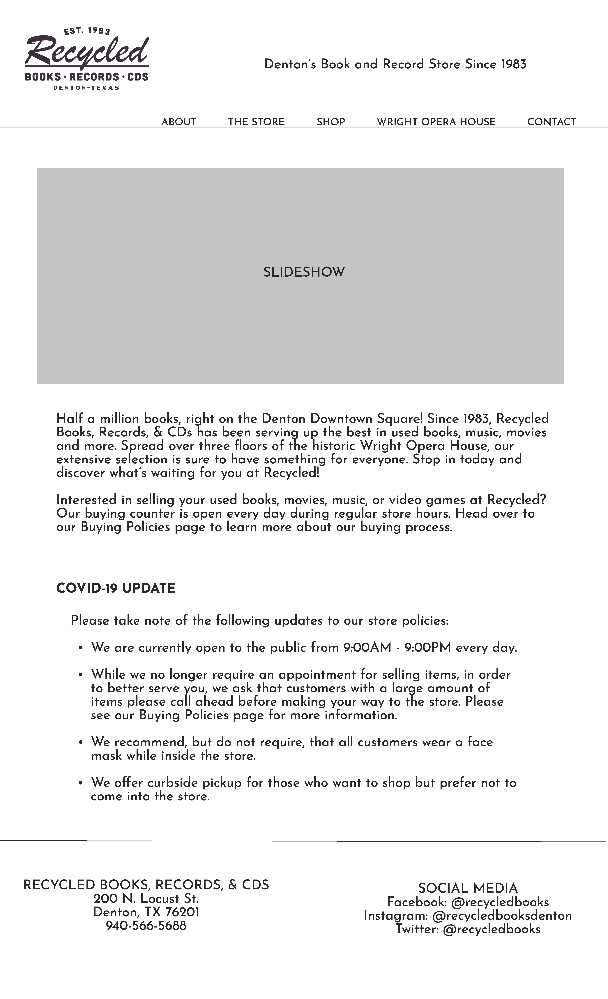

Homepage and Taskbar Redesign
Tools Used:
- OptimalWorkshop
- Figma
Project Description:
This was an assignment for my user experience class in which we were tasked to redesign a website of a local business based on UX best practices. Our project had four steps: conducting a card sort to organize content, creating a persona to design the site around, conducting a think-aloud protocol to gain other perspectives on errors within the site, and a new wireframe with changes based on our research.
- Card Sort: I conducted a card sort with seven participants using OptimalWorkshop to organize the pages of this site under the navigation headings. For this test, I experimented by adding an “About” heading to see how testers would respond to it. They responded positively and used it to organize the pages within the site in a natural manner.
- Persona: I created a user persona for the Recycled Books website based on their target demographic of Denton college students. I added details about their class schedule, their budget, and their motivation for choosing Recycled Books over another local bookstore.
- Think-Aloud Protocol: I conducted a think-aloud protocol test on three participants based on their likelihood of using the site. The first participant was someone who often visited Recycled Books but not their website, the second participant was someone who was likely to both visit their website and the store, and the third participant was someone who had worked on websites before but had not visited Recycled Books or their website. The results I got from this test were very helpful to my revision of the site; participants remarked their confusion in “Online Storefronts” section of the site, wishing that it were labeled something along the lines of “Shop.” Participants also remarked that the order of information on the homepage was confusing, with high-priority information being toward the bottom of the page and their hours being more difficult to find than they should have been.
- Wireframe: I created a new wireframe for the homepage of their website. The biggest priorities with their website redesign were reordering the navigation bar of the site and placing pages under different navigation tabs, and reordering the information on the homepage to answer the most common questions users have about the site first.

Updated wireframe for Recycled Books website